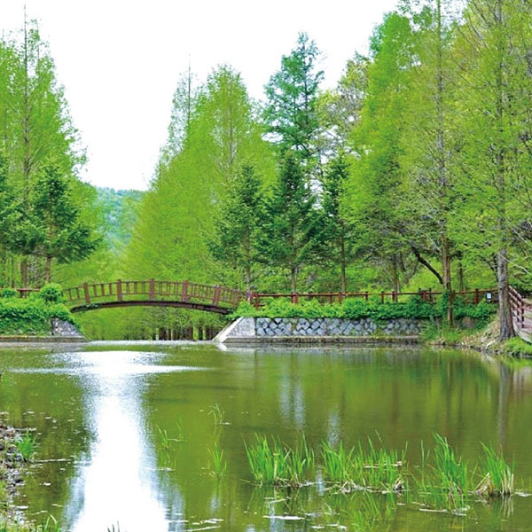
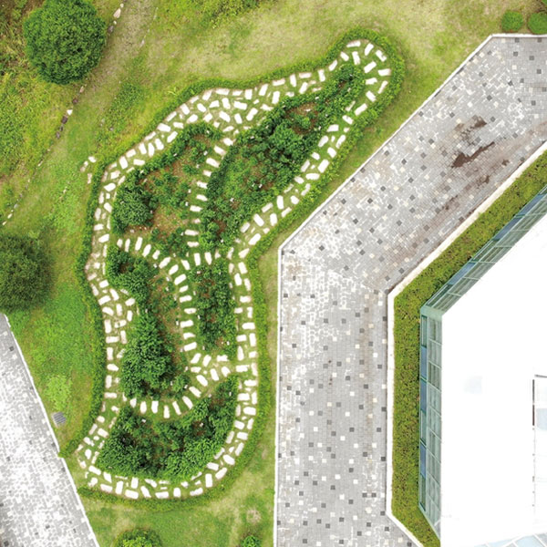

> 미동산수목원 > 수목원 소개
> 미동산수목원 > 수목원 소개수목원 소개
수목원은 다양한 유전자원을 수집 보전하여 식물유전자의 가치를 지속시키고
건전한 산림환경 문화를 선도해 나가는 시설입니다.
- 
- 
-
- 1. 관람시간
- ▶ 하절기(3월~10월) : 09:00 ~ 18:00
- ▶ 동절기(11월~2월) : 09:00 ~ 17:00
- ※ 입장시간은 종료시간 1시간 전까지 입니다.
-
- 2. 휴원일
- 매주 월요일, 1월 1일, 설·추석(당일)
- ※ 단, 월요일이 휴일인 경우 그 다음날 휴원
-
- 3. 입장료
- ▶ 성인 : 2,500원 | 청소년 : 2,000원 | 어린이 : 1,500원
- ※ 도민, 단체(30명 이상) 500원씩 할인
- ▶ 무료입장
-
- - 만 6세 이하, 만 65세 이상
- - 장애인, 국가유공자, 독립유공자, 참전유공자 등 유공자
- - 국민기초생활수급자, 숲사랑지도원, 명예도민, 도민대상수상자
- - 수목원 자원봉사자 및 학술활동, 산림교육 등을 위해 출입하는 자
- - 청주시 상당구 미원면 거주자(주민등록기준) 등
-
- 4. 유의사항
-
- - 수목,식물과 각종 시설물을 손상시키는 행위 금지
- - 동물 밀렵 및 식물, 곤충, 토석 등 채취행위 금지
- - 음주, 취사, 노점상 등 상행위 및 종교의식, 집회활동 금지
- - 소란을 피우거나 쓰레기 투기행위 금지
- - 애완동물 동반 및 인화물질 반입 금지
- - 체육활동, 레크레이션 행위 금지 (자전거 ,롤러스케이트, 킥보드, 배드민턴 등)

수목원은 우리에게
아래 네가지의 역할을 합니다.

- 01
- 수목은 우리에게 꼭 필요한 산림자원이며 자연을 아름답게 꾸며주고 있는 나무들을 심고 가까이 하면서, 누구나 쉽게 조용히 쉬면서 자연을 공부할 수 있도록 하고 있습니다.
- 02
- 우리에게 필요한 나무의 신품종 개발과 시험 및 숲을 이용하는데 필요한 연구를 하고 있으며, 각종 수목과 야생초화류를 종류별로 전시하여 볼거리를 제공하고 있습니다.
- 03
- 산림병해충 피해 방제를 위한 연구를 통해 피해를 최소화하고, 희귀·멸종위기의 야생 동물 등을 보호증식하고 쾌적한 산림 휴양공간을 제공하고 있습니다.
- 04
- 수목원내에 산림교육관을 설립하여 자라나는 청소년과 우리의 후손들에게 역사적 사회적 교육의 장으로도 활용할 수 있도록 하였습니다.
수목원이 주는
여러가지 기능을 느껴보세요.
수목원은 식물자원을 수집하여 보전하며 식물유전자의 가치를 지속시키고 전문가 및 일반인들에게 전시함으로서 식물과 관련된 지식을 널리 보급하여 건전한 환경문화를 선도해 나가는 시설입니다.
- 첫째, 식물을 수집할수 있습니다.
- 수목원의 가장 본질적인 기능으로 약용식물, 방향식물, 염료식물 등 목적에 의해 살아있는 식물을 채집하거나 종자를 확보하여 수목원에 보전하는 기능을 수행합니다.
- 둘째, 식물종 보존의 기능이 있습니다.
- 수목원은 현재 지구상에 존재하는 다양한 식물 중 생태적,문화적 가치가 있거나 희귀 및 멸종위기식물 등 인위적으로 보존해야 할 식물종을 안전하게 관리하고 번식시켜 보존하는 역할을 합니다.
- 셋째, 교육적인 역할을 수행합니다.
- 현대에 대중적인 수목원이 많이 조성되어 자연교육의 장으로 활용되고 있습니다. 이를 통해 수목원의 역할을 잘 이해할 수 있도록 도와주며 환경문제를 해결하는데 중요한 역할을 할 수 있게 도와줍니다.
- 넷째, 학술 연구의 역할을 수행합니다.
- 수목원은 식물분류, 형질개량, 재료추출 등 식물 특성과 그 이용에 대한 실험 및 관찰의 장소로 연구의 역할을 수행합니다.
- 다섯째, 훌륭한 여가시설이 됩니다.
- 다양한 성상 색체를 가진 식물 소재를 지형에 맞춰 배식을 하고 시각적인 즐거움을 제공함으로써 수목원은 그 자체로도 훌륭 한 여가시설이 될 수 있습니다.